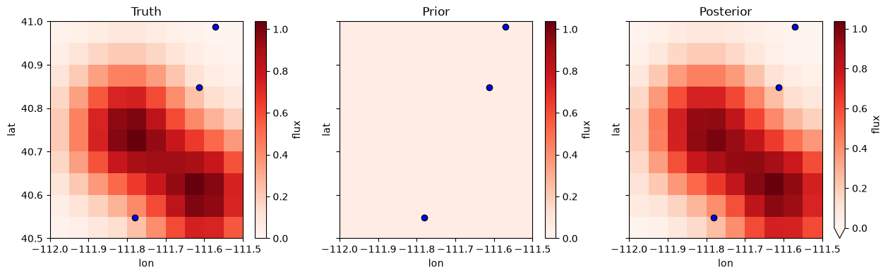
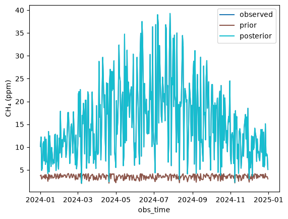
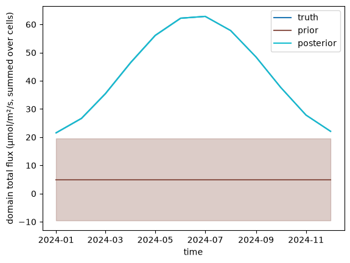

A regional flux inversion#
Methane measured at a few sites depends on the emissions upwind of them. This notebook finds a year of monthly methane fluxes on a 10 x 10 grid from daily concentrations at three sites. The data are synthetic: a known truth (two emission hotspots with a seasonal cycle) makes the observations, so the estimate can be compared with it.
In the words of the terminology:
the state is the flux of each grid cell in each month (µmol/m²/s), a block named
fluxlabeled by(time, lat, lon);the observations are daily concentrations at each site (ppm), a block named
concentrationlabeled by(site, obs_time);the forward operator is the transport: how much a unit flux in a cell raises the concentration at a site (here a made-up footprint that decays with distance), and it is sparse, since a day sees only its own month;
the offset is the background concentration the fluxes do not explain;
the prior is a uniform flux, with a prior covariance correlated in time and in space, and the observation covariance is independent noise.
import matplotlib.pyplot as plt
import numpy as np
import pandas as pd
import scipy.sparse as sp
import fips
from fips.visualization import plot_comparison
rng = np.random.default_rng(42)
The grid, the sites and the times#
lons = np.round(np.arange(-111.975, -111.5, 0.05), 3)
lats = np.round(np.arange(40.525, 41.0, 0.05), 3)
months = pd.date_range("2024-01-01", periods=12, freq="MS")
days = pd.date_range("2024-01-01", "2024-12-31", freq="D")
sites = pd.DataFrame(
{"lon": rng.uniform(-112.0, -111.5, 3), "lat": rng.uniform(40.5, 41.0, 3)},
index=pd.Index(["site_a", "site_b", "site_c"], name="site"),
)
sites
| lon | lat | |
|---|---|---|
| site | ||
| site_a | -111.613022 | 40.848684 |
| site_b | -111.780561 | 40.547089 |
| site_c | -111.570701 | 40.987811 |
Labels and vectors#
The state is a flux for every month and cell, labeled by (time, lat, lon);
the prior is a uniform 0.05 µmol/m²/s, in a block named flux. The
observations are labeled by (site, obs_time), in a block named
concentration.
cells = pd.MultiIndex.from_product([months, lats, lons], names=["time", "lat", "lon"])
prior = fips.Vector.from_series(
pd.Series(0.05, index=cells, name="prior"), block="flux"
)
obs_labels = pd.MultiIndex.from_product([sites.index, days], names=["site", "obs_time"])
len(cells), len(obs_labels)
(1200, 1098)
The forward operator#
A day’s concentration at a site sees only the fluxes of that day’s month, so
most of the matrix is zero, and it is built sparse. Each day, a site sees the
cells around a point upwind of it (the wind changes from day to day), and its
sensitivity to a cell decays with the distance from that point. fips.Operator labels the
matrix by position: rows in the order of obs_labels, columns in the order
of cells.
grid_lat, grid_lon = np.meshgrid(
lats, lons, indexing="ij"
) # in the order of `cells` within a month
n_cells = grid_lat.size
rows, cols, values = [], [], []
upwind = rng.normal(
0.0, 0.1, (len(obs_labels), 2)
) # degrees, one shift per site and day
for i, (site, day) in enumerate(obs_labels):
x, y = sites.at[site, "lon"] + upwind[i, 0], sites.at[site, "lat"] + upwind[i, 1]
distance = np.hypot(grid_lon - x, grid_lat - y)
month = day.month - 1
rows.append(np.full(n_cells, i))
cols.append(month * n_cells + np.arange(n_cells))
values.append(np.exp(-0.5 * (distance.ravel() / 0.15) ** 2))
jacobian = sp.csr_array(
(np.concatenate(values), (np.concatenate(rows), np.concatenate(cols))),
shape=(len(obs_labels), len(cells)),
)
obs_space = fips.Space({"concentration": obs_labels})
forward = fips.Operator(jacobian, obs_space, prior.space)
forward.data
<1098x1200 SparseOperator with dtype=float64>
A truth, and the observations it makes#
Two hotspots with a seasonal cycle, peaking in summer. The observations are the forward operator times the truth, plus a background of 1.9 ppm, plus noise.
hotspots = [(-111.8, 40.75), (-111.6, 40.6)]
spatial = sum(
np.exp(-0.5 * ((grid_lon - x) ** 2 + (grid_lat - y) ** 2) / 0.1**2)
for x, y in hotspots
)
season = 1.0 + 0.5 * np.sin(2 * np.pi * (months.dayofyear - 80) / 365.25)
truth = fips.Vector(
np.concatenate([s * spatial.ravel() for s in season]), prior.space, name="truth"
)
background = 1.9
noise = 0.002
observed = forward @ truth
obs = fips.Vector(
observed.values + background + rng.normal(0.0, noise, len(obs_labels)),
obs_space,
name="observed",
)
/tmp/ipykernel_2518/320684116.py:6: Pandas4Warning: DatetimeIndex.dayofyear is deprecated and will be removed in a future version. Use DatetimeIndex.day_of_year instead.
season = 1.0 + 0.5 * np.sin(2 * np.pi * (months.dayofyear - 80) / 365.25)
The covariances#
The prior’s errors are alike for nearby cells and nearby months: a
Kronecker product of an exponential correlation in time (over 60 days) and
one in space (over 20 km along the great circle), with a standard deviation
of 0.25 µmol/m²/s. It is kept as its two factors, never as the 1200 x 1200
matrix. The observation errors are independent.
prior_cov = fips.Kronecker(
fips.Exponential("time", "60D"),
fips.Exponential(["lat", "lon"], 20.0, metric="haversine"),
).with_std(0.25)
obs_cov = fips.Independent().with_std(noise)
The problem and its solution#
The background is the problem’s offset: the part of the observations the fluxes do not explain.
problem = fips.Problem(
prior=prior,
prior_cov=prior_cov,
obs=obs,
obs_cov=obs_cov,
forward=forward,
offset=background,
)
post = fips.solve(problem)
post.summary()
| gamma | n_state | n_obs | dofs | chi2 | reduced_chi2 | r2 | rmse | uncertainty_reduction | |
|---|---|---|---|---|---|---|---|---|---|
| 0 | 1.0 | 1200 | 1098 | 280.013506 | 995.421281 | 0.906577 | 1.0 | 0.001724 | 0.632659 |
Maps#
to_xarray() puts the flux block on its levels, (time, lat, lon), so the
yearly means are one line each.
means = {
"Truth": truth["flux"].to_xarray().mean("time"),
"Prior": problem.prior["flux"].to_xarray().mean("time"),
"Posterior": post.estimate["flux"].to_xarray().mean("time"),
}
vmax = max(float(m.max()) for m in means.values())
fig, axes = plt.subplots(ncols=3, figsize=(15, 4), sharey=True)
for ax, (title, data) in zip(axes, means.items(), strict=True):
data.plot(ax=ax, x="lon", y="lat", cmap="Reds", vmin=0, vmax=vmax)
ax.scatter(sites["lon"], sites["lat"], color="blue", edgecolors="black", zorder=5)
ax.set_title(title)

The fit at one site#
The observations, what the prior predicts and what the estimate predicts, at one site over the year.
def at_site(vector, name, site="site_a"):
"""Return one site's concentrations over time, as a Series named for the legend."""
return vector.to_series().droplevel("block").xs(site, level="site").rename(name)
fig, ax = plot_comparison(
at_site(problem.obs, "observed"),
at_site(problem.predict(problem.prior), "prior"),
at_site(post.modeled_obs, "posterior"),
)
ax.set_ylabel("CH₄ (ppm)");

Monthly totals and their uncertainty#
The question is often about an aggregate: the flux summed over the domain each
month. fips.aggregate.sum builds the aggregation, and post.cov(W) is the
posterior covariance of the totals, computed without the full 1200 x 1200
posterior covariance. plot_comparison draws the prior and the posterior
with a band of one standard deviation each, and the truth.
W = fips.aggregate.sum(prior.space, by="time")
def total(vector, name):
"""Return the domain total of each month, as a Series named for the legend."""
return (W @ vector).to_series().droplevel("block").rename(name)
fig, ax = plot_comparison(
total(truth, "truth"),
total(problem.prior, "prior"),
total(post.estimate, "posterior"),
errors=[None, W @ problem.prior_cov @ W.T, post.cov(W)],
)
ax.set_ylabel("domain total flux (µmol/m²/s, summed over cells)");

Which months the data constrain#
The averaging kernel of the totals says how the estimated total of each month responds to its true total: near 1 where the observations decide it, near 0 where it stays at the prior.
post.averaging_kernel(W).to_frame().round(2)
| block | flux | ||||||||||||
|---|---|---|---|---|---|---|---|---|---|---|---|---|---|
| time | 2024-01-01 | 2024-02-01 | 2024-03-01 | 2024-04-01 | 2024-05-01 | 2024-06-01 | 2024-07-01 | 2024-08-01 | 2024-09-01 | 2024-10-01 | 2024-11-01 | 2024-12-01 | |
| block | time | ||||||||||||
| flux | 2024-01-01 | 1.0 | 0.0 | 0.0 | -0.0 | -0.0 | 0.0 | -0.0 | 0.0 | 0.0 | -0.0 | -0.0 | -0.0 |
| 2024-02-01 | 0.0 | 1.0 | 0.0 | 0.0 | -0.0 | 0.0 | -0.0 | -0.0 | 0.0 | -0.0 | 0.0 | -0.0 | |
| 2024-03-01 | 0.0 | 0.0 | 1.0 | 0.0 | 0.0 | 0.0 | -0.0 | 0.0 | 0.0 | -0.0 | 0.0 | -0.0 | |
| 2024-04-01 | 0.0 | 0.0 | 0.0 | 1.0 | 0.0 | 0.0 | 0.0 | 0.0 | 0.0 | -0.0 | 0.0 | -0.0 | |
| 2024-05-01 | 0.0 | 0.0 | 0.0 | 0.0 | 1.0 | 0.0 | 0.0 | 0.0 | 0.0 | -0.0 | 0.0 | -0.0 | |
| 2024-06-01 | 0.0 | 0.0 | 0.0 | 0.0 | 0.0 | 1.0 | 0.0 | 0.0 | 0.0 | -0.0 | 0.0 | -0.0 | |
| 2024-07-01 | 0.0 | 0.0 | 0.0 | 0.0 | -0.0 | 0.0 | 1.0 | 0.0 | 0.0 | -0.0 | 0.0 | -0.0 | |
| 2024-08-01 | 0.0 | 0.0 | 0.0 | 0.0 | -0.0 | 0.0 | 0.0 | 1.0 | 0.0 | 0.0 | 0.0 | 0.0 | |
| 2024-09-01 | -0.0 | 0.0 | 0.0 | 0.0 | -0.0 | 0.0 | 0.0 | 0.0 | 1.0 | 0.0 | 0.0 | 0.0 | |
| 2024-10-01 | -0.0 | 0.0 | 0.0 | -0.0 | -0.0 | 0.0 | 0.0 | 0.0 | 0.0 | 1.0 | 0.0 | 0.0 | |
| 2024-11-01 | -0.0 | 0.0 | 0.0 | -0.0 | -0.0 | 0.0 | 0.0 | 0.0 | 0.0 | 0.0 | 1.0 | 0.0 | |
| 2024-12-01 | -0.0 | 0.0 | 0.0 | -0.0 | -0.0 | 0.0 | 0.0 | 0.0 | 0.0 | 0.0 | 0.0 | 1.0 | |